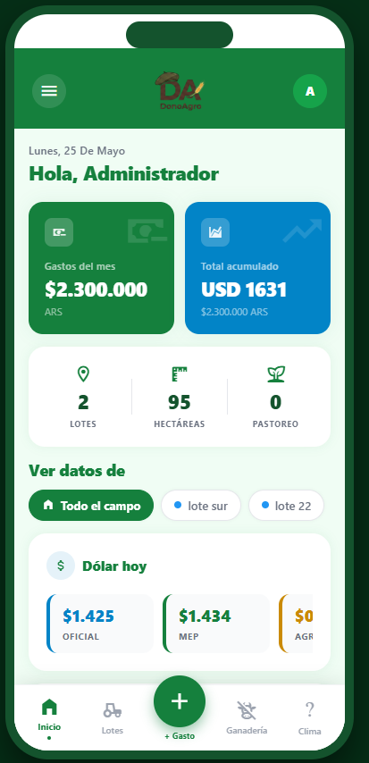
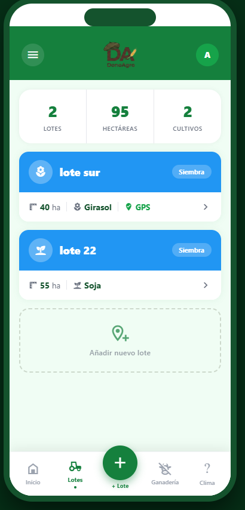
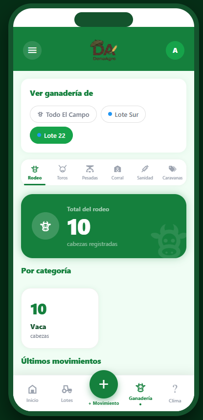
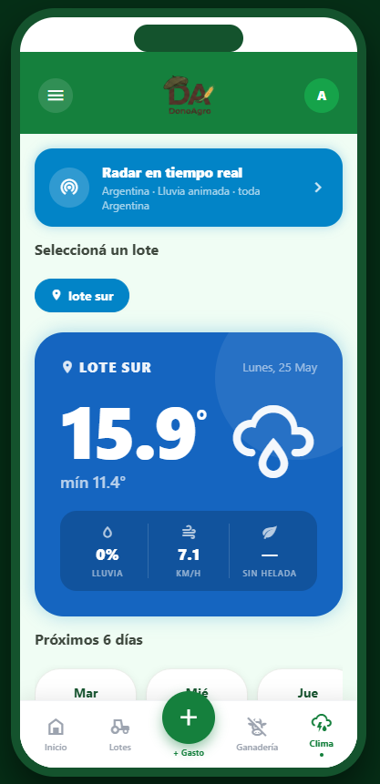

01
El cuaderno que se pierde
Anotás los gastos del mes en una libreta y a fin de año tenés que adivinar cuánto realmente gastaste en sanidad, combustible o personal.
DonoAgro es la app pensada para el productor argentino. Gastos, lotes, hacienda y clima — todo en un solo lugar, sin planillas ni vueltas.

Anotás los gastos del mes en una libreta y a fin de año tenés que adivinar cuánto realmente gastaste en sanidad, combustible o personal.
Querés saber cuántas pesadas tenés en cada lote y tenés que llamar al encargado. Después al peón. Después abrir tres planillas distintas.
Una para la lluvia, otra para heladas, otra para el radar. Y ninguna te da el pronóstico exacto del lote donde está sembrada la soja.
Diseñada con productores reales, simple para usarla a campo abierto y completa para entender tu campo de un vistazo.
Apenas abrís la app ves los gastos del mes, la cotización del dólar y un pantallazo de tus lotes y hectáreas. Cero menúes — todo a la vista.
Listá todos tus lotes con superficie, cultivo y etapa. Sumá uno nuevo en segundos y entrá al detalle de cada uno para ver más datos.

Llevá el conteo de cabezas por categoría —rodeo, toros, pesadas, corral— y registrá sanidad y caravanas filtrando por lote.

Temperatura, lluvia, viento y helada — geolocalizado al lote que elijas. Con radar de lluvia en vivo y pronóstico extendido a 6 días.

Cómo cambia tu día a día cuando todo el campo vive en una sola app.
Sea cual sea tu actividad, DonoAgro se adapta a la manera en que llevás tu campo.
Llevás cabezas, categorías y sanidad. Querés saber dónde está cada rodeo, cuándo vacunaste y cuánto pesa el corral antes de mandarlo a feria.
Trabajás lotes con soja, maíz, trigo o girasol. Te importa la etapa del cultivo, el clima exacto del lote y el control de gastos por campaña.
Tenés agricultura y ganadería en el mismo campo. Necesitás verlo todo junto: hectáreas sembradas, cabezas por lote, clima y plata.
DonoAgro nace para productores argentinos, hablada en argentino y pensada para los desafíos del campo nuestro — desde la Patagonia hasta el NEA.
Dejanos tu email y te avisamos apenas DonoAgro esté disponible. Sin spam, solo el aviso de lanzamiento.